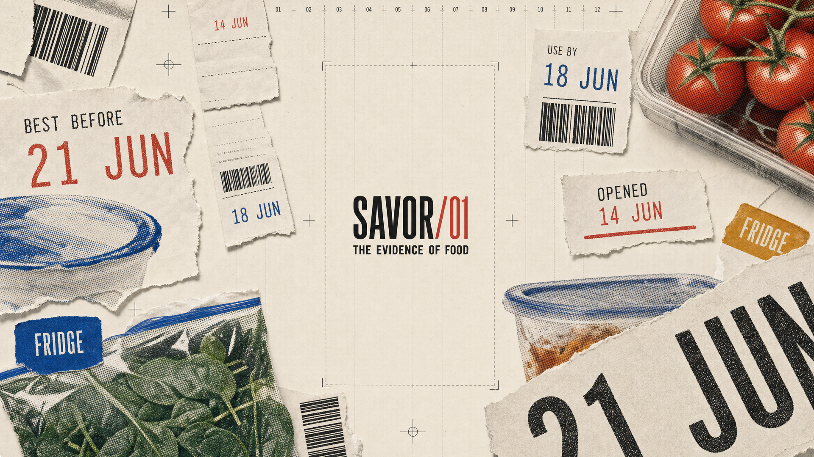
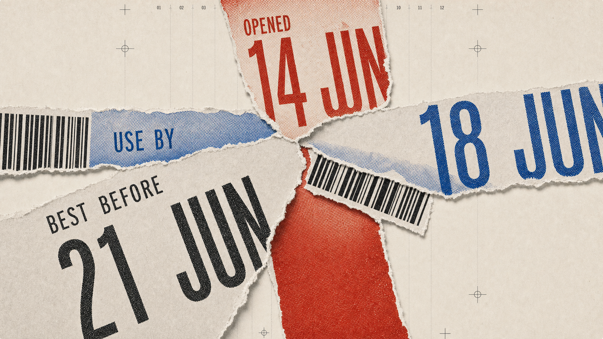
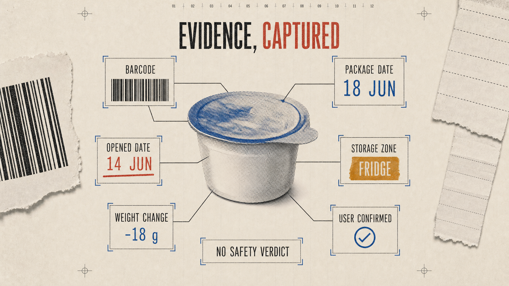
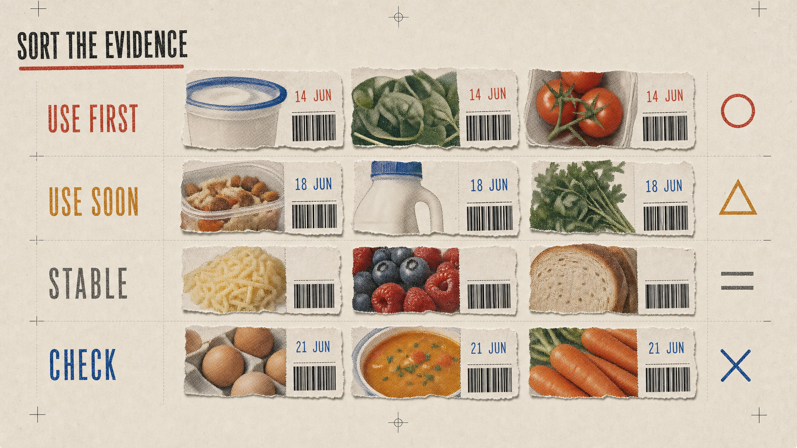
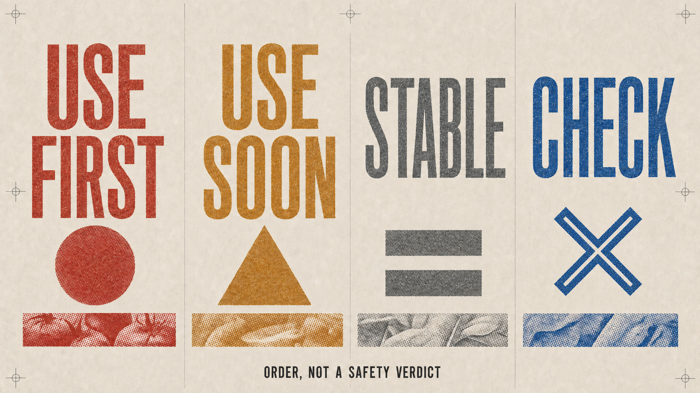
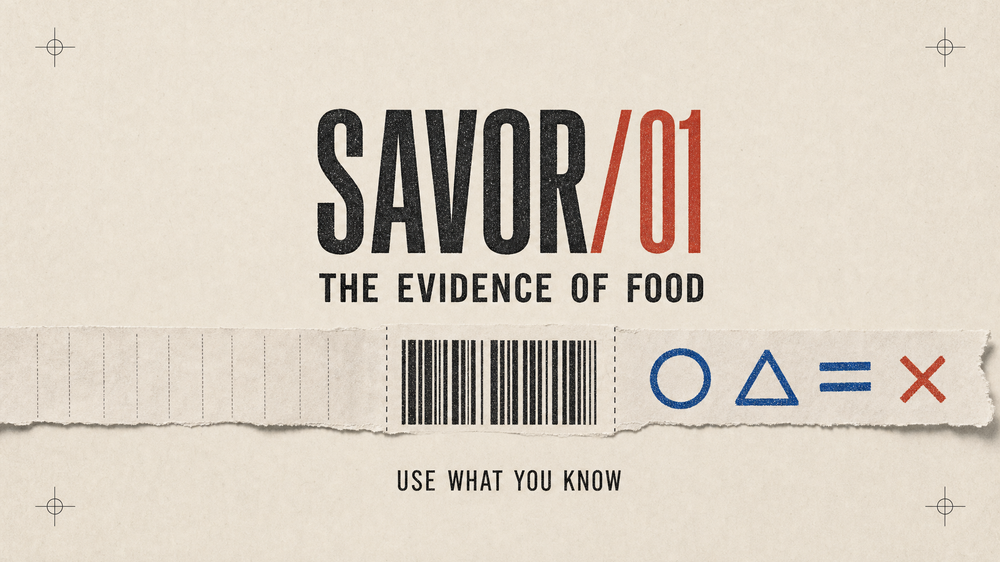

PRE-DROP MOTION REVIEW / 20 SECONDS / 24 FPS
SAVOR/01 — The Evidence of Food
ANIMATIC v01 · SILENT






01 / EVIDENCE SPILL
00–03
03–06
06–09
09–13
13–17
17–20
00:00.00 / 00:20.00
01 Evidence SpillPaper feed · scanner ticks
02 Date Collision3 stamp impacts · 8-frame hold
03 Evidence Capture6 optical clicks · snap
04 Triage Build12 tiles · position before color
05 Four States4 cylinder hits · diagonal X
06 Final LockupLow pulse · 36-frame hold